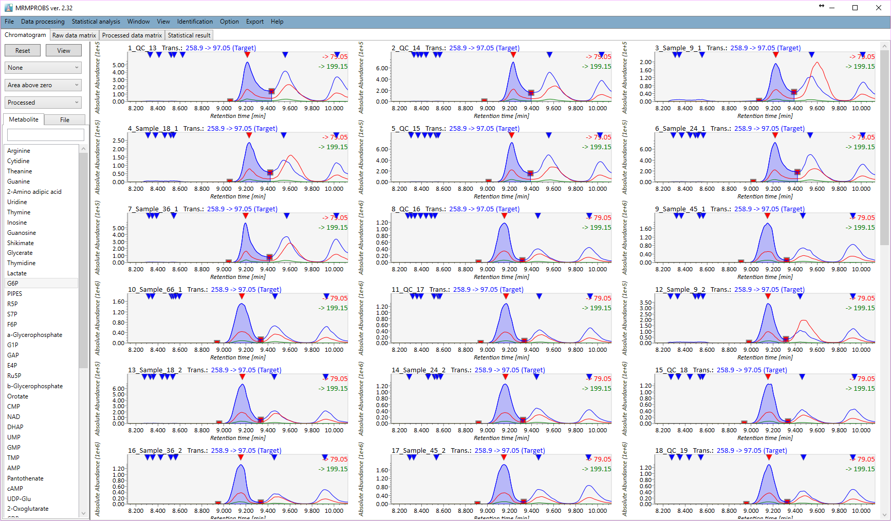

MRMPROBS
Objective
MRMPROBS is launched as a universal program
for targeted metabolomics using not only multiple reaction monitoring (MRM)-
or selected reaction monitoring (SRM) but also SCAN and data independent MS/MS acquisition (DIA) data.
Our objective is to develop a data processing tool for widely targeted metabolomics
by means of mass spectrometers such as QqQ-MS, DIA-MS, and just single Q-MS.
Although the strategy became increasingly popular for the simultaneous analysis of up to several hundred metabolites at high sensitivity, selectivity, and quantitative capability, software development for the data analysis of MRM transitions lags behind in metabolomics: data assessment usually relies on manual evaluation due to the lack of automated probabilistic measures.
Here, we developed a software program,
MRMPROBS (Multiple Reaction Monitoring based PROBabilistic System for widely targeted metabolomics),
written in C# language for widely targeted metabolomics.
It evaluates the metabolite peaks by posterior probability, defined as the odds ratio by means of a newly optimized multivariate logistic regression model, and visualizes large-scale MS data sets with user-friendly graphical user interfaces to allow data curation and statistical analyses.
for targeted metabolomics using not only multiple reaction monitoring (MRM)-
or selected reaction monitoring (SRM) but also SCAN and data independent MS/MS acquisition (DIA) data.
Our objective is to develop a data processing tool for widely targeted metabolomics
by means of mass spectrometers such as QqQ-MS, DIA-MS, and just single Q-MS.
Although the strategy became increasingly popular for the simultaneous analysis of up to several hundred metabolites at high sensitivity, selectivity, and quantitative capability, software development for the data analysis of MRM transitions lags behind in metabolomics: data assessment usually relies on manual evaluation due to the lack of automated probabilistic measures.
Here, we developed a software program,
MRMPROBS (Multiple Reaction Monitoring based PROBabilistic System for widely targeted metabolomics),
written in C# language for widely targeted metabolomics.
It evaluates the metabolite peaks by posterior probability, defined as the odds ratio by means of a newly optimized multivariate logistic regression model, and visualizes large-scale MS data sets with user-friendly graphical user interfaces to allow data curation and statistical analyses.

Please cite
MRM-DIFF: Data Processing Strategy for Differential Analysis in Large Scale MRM-based Lipidomics Studies. Frontiers in Genetics 5:471, 2014.  [PubMed]
[PubMed]
MRMPROBS suite for metablomics using large-scale MRM assays. Bioinformatics 30, 2379–2380, 2014. [PubMed]
MRMPROBS: A Data Assessment and Metabolite Identification Tool for Large-Scale Multiple Reaction Monitoring Based Widely Targeted Metabolomics. Analytical Chemistry 85, 5191–5199, 2013. [PubMed]
Software
File converter
Library
Related page
Demonstration files
Acknowledgement
This project was mainly supported
by NSF-JST Strategic International Collaborative Research Program (SICORP) for JP-US Metabolomics.
by NSF-JST Strategic International Collaborative Research Program (SICORP) for JP-US Metabolomics.
MS-FINDER is mainly developed between UC Davis Prof.
Oliver Fiehn team and RIKEN CSRS (and NIG) Prof. Masanori Arita team.
Oliver Fiehn team and RIKEN CSRS (and NIG) Prof. Masanori Arita team.